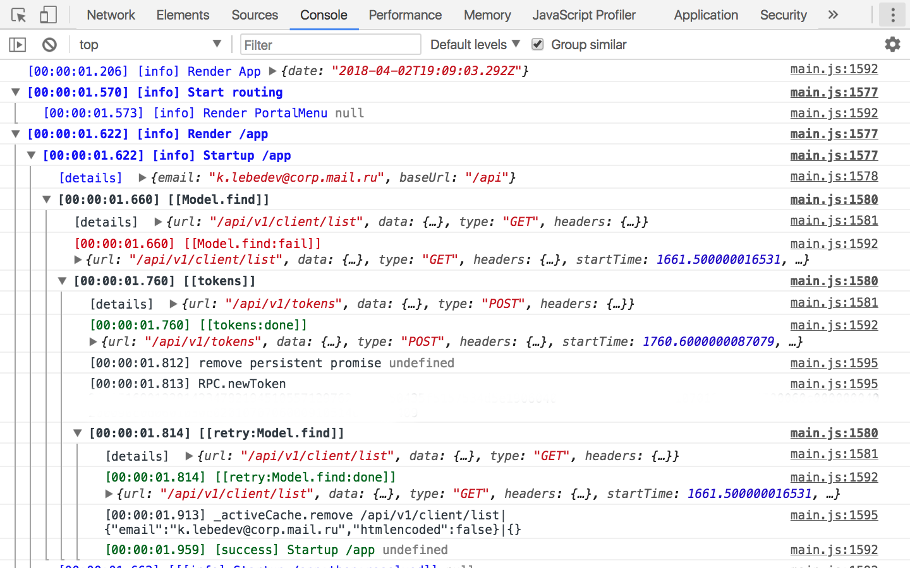

* — backend


// Получение списка тредов
Thread.find({folder: 8}).then(threads => {
// ...
});

RPC.intercept({
#! status: "invalid",
#!+ process(req) {
#!+ if (req.get("body.folder.error") === "not_open") {
// Возвращаем Promise
return openSecureFolderLayer({
folder: req.get("body.folder.value")
});
#!- }
#!- }
});


* name — поддерживает dot-нотацию
const listFoo = new BackboneTheadCollection({folder: 123});
listFoo.fetch();
const listBar = new BackboneTheadCollection({folder: 123});
listBar.fetch();
#!+ console.log(listFoo.get(456) === listBar.get(456));
// false :[
listFoo.on("chnage", () => { console.log("Cnanged"); });
listBar.get(456).set("flag", true);
#!- // ничего не произойдет, потому что инстансы разные
// Где-то получаем тред
Thread.findOne(123).then(thread => {
thread.get("messages").on("change:flags", () => {
// Реагируем на изменение флагов
});
});
#!+ // Где-то письмо (которое входит в тред)
Message.findOne(345).then(message => {
#!+ // Инвертируем флаг (мы так не делаем :])
#!- message.set("flags.unread", !message.is("flags.unread"));
#!- });
const Thread = Message.extend({
className: "mail.Thread", // для логирования
findUrl: "threads", // Получение списка тредов
findOneUrl: "threads/thread", // Запрос за тредом
defaults: { // Свойства по умолчанию
...
messages: new Message.List.Sorted,
}
});
// Письмо
const Message = RPCModel.extends({
defaults: {
...
attachments: new Attachment.List.Local(),
},
// Валидация атрибутов при изменении
valueValidator(newValue, attr, newAttrs, model) {
return check(model, attr, newValue) ? newValue : model.get(attr);
}
});
#!+ // Отсортированный список моделей
Message.List.Sorted = Message.List.extend({
comparator: {date: true} // desc
#!- });
const Thread = Message.extend({
findOneUrl: "threads/thread"
findOneUrl: (query) => query.withoutQuote
? "threads/thread/short"
: "threads/thread"
},
isDataFully(query) {
#!+ return this.is("messages.length") && (
query.withoutQuote || hasQuotes(this)
#!- );
}
});

Client.find().then(list => ...);
request.on("error", (evt, req) => {
saveToLog(req);
});
const MyAction = Action.extend(/** @lends MyAction# */{
#!+ // Подготовка данных
prepare(params, options)/* Promise|Object */ {
return {computed: params.foo + params.bar};
#!- },
#!+ // Выполняемая операция
#!- operation({computed}, params, options) /* Promise */ { /* … */ },
#!+ // Обратная операция
#!- undoOperation(data, params, options) /* Promise */ { /* … */ },
#!+ // Откатываем изменения в случае ошибки при выполнении
#!- rollbackOperation() { }
});
MoveTo.execute({
folderTo: 123, // id папки куда переносим
models: [...] // Массив Писем или Тредов (модели)
}).then(action => {
// Ссылка на модель Папки куда переместили
const folderTo = action.folderTo;
// Список реально перемещенных моделей
const affectedModels = action.models;
// Показывает нотификацию для отмены действия
showUndoNotify().onUndo(() => action.undo());
});


require(["app/app", "logger"], function (app, logger) {
// Скрыть лоудер загрузки приложения
app.ready(hideLoading);
// Перехват ссылок и запуск приложения
app.listenFrom(document, {
autoStart: true,
logger: logger
});
});
const app = Pilot.create({
#! model: { /* модели доступные всем маршрутам */ },
#!+ "#letters": {
url: "/:folder", // "/inbox/", "/trash/" или "/123/"
#!+ model: { // модели конкретного маршрута
threads: ({params: {folder}}) => Thread.find({folder})
#!- }
#!- },
});
// Перейти на нужный маршрут
app.go("#letters"); // "/inbox/"
app.go("#letters", {folder: 123}); // "/123/"
// Сформировать url
app.getUrl("#letters", {folder: 0}); // "/inbox/"
app.getUrl("#letters", {folder: 123}); // "/123/"
// Или для текущего маршрута
app.route.getUrl({folder: 0}); // "/inbox/"
"#letters": {
url: {
pattern: "/:folder", // "/inbox/", "/trash/" или "/123/"
#!+ params: {
folder: {
#! default: Folder.INBOX,
#! decode: (val) => (val in TYPE2ID) ? TYPE2ID[val] : toInt(val),
#! encode: (id) => (id in ID2TYPE) ? ID2TYPE[id] : id,
}
#!- },
#! toUrl: (params, builder) => builder({params, ...extra}),
},
model: { /*...*/ },
// ...
}
console.dir(app.model);
{
request: Pilot.Request, // текущий «location»
authUser: User, // авторизованный юзер
folder: Folder, // активная папка
folders: Folder.List, // список папок
letters: Thread.List, // список тредов или писем
letter: Thread, // активный тред (на чтении)
status: Object, // статус ящика
...
}
// Источники данных
import request from "./source/request";
import authUser from "./source/authUser";
import status from "./source/status";
import folders from "./source/folders";
// ...etc
const loader = new Pilot.Loader({
request,
authUser,
status,
folders,
// ...etc
}, {
/* разные опции */
});
// source/request.js
export default {
fetch: (req) => req,
};
#!+ // source/status.js (!)
export default {
fetch: (req) => loadStatusByRequest(req),
reaction(req, newStatus, event) {
// Реакция на события
// (загрузка данных или «Действия» над моделями)
}
#!- };
// source/folders.js
export default {
fetch(req, **waitFor**) {
return waitFor("status").then(status => status.folders);
},
};
#!+ // source/folder.js
export default {
fetch(req, waitFor) {
if (req.is("#read-letter")) { // Если это «Чтение»
#!+ return Promise
.all([**waitFor("folders"), waitFor("letter")**])
#!- .then(([folders, letter]) => folders.get(letter.get("folder")));
} else {
#! return waitFor("folders").then(folders => folders.get(req.params.folder));
}
}
#!- };
// source/letter.js
export default {
match: ["#read-letter", "#search-letter"],
fetch: ({params:{letter}}) => Thread.findOne(letter),
};
const app = Pilot.create(sitemap);
#!+ // Создаём AppView
app.view = new UIApplication(dataSource.getData(), {
router: app,
dataSource,
#!- });
#!+ // Подписываем View на изменение данных
dataSource.onChange(data => {
app.view.set(data);
#!- });

<b:letter-status
name="unread"
state="{attrs.unread}"
remit:click="invert:unread"
/>

/Button/
export default {
keywords: "btn кнопка",
cases: {
"base": {
attrs: [{text: "Написать"}]
},
"primary": {
attrs: [
{type: "submit", text: "Написать"},
{ico: "compose", type: "submit", text: "Написать"},
{ico: "compose", short: true, type: "submit", text: "Написать"},
{pressed: true, type: "submit", text: "Написать"}
]
},
}
};
model и models
// Список тредов строится на основе Thread.List
<b:dataset-letters models="{attrs.model.threads}" />
// Вывод треда
<b:thread model="{attrs.model.thread}" />
<b:portal-menu
#! use:mediator="letters-actions letters-selection"
/>
// ...
<b:thread
model="{attrs.model}"
#! use:mediator="letters-actions"
/>
// Действия
import MarkAsAction from "jssdk/mail/actions/MarkAs";
import DeleteAction from "jssdk/mail/actions/Delete";
#!+ // Другие медиаторы
#!- import lettersSelection from "mediator/letters-selection";
#!+ export default feast.Mediator.create("letters-actions", {
components: {
#!+ "dataset-letters": { // имя для обращения внутри медиатора
#! "class": UIDatasetLetters, // <b:dataset-letter/>
#!+ // события, на которые подписывается медиатор
#!- "events": ["invert:unread", "delete", ...],
#!- },
#!+ "router": {
"class": Pilot,
#!- },
// ...
},
handleEvent(evt) { /* ... */ },
// ...
#!- });
export default feast.Mediator.create("layout-manager", {
components: { /* ... */ },
handleEvent(evt) {
// Тип события
const type = evt.type;
// Получаем список моделей от медиатора отвечающего за выделение писем
const selectedModels = lettersSelection.getModels();
#!+
if (type === "delete") {
#!+ DeleteAction.execute({models: selectedModels})
.then(this._done)
#!- .catch(this._fail);
} else if (type === "move") {
// ...
}
#!-
#!+ swipeManager.reset(); // Закрываем свайпы
lettersSelection.reset(); // Сбрасываем выделение
#!- // По завершению `handleEvent`, всем связанные блоки с медиатором будут обновлены
}
});